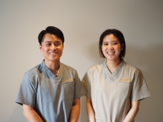
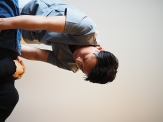
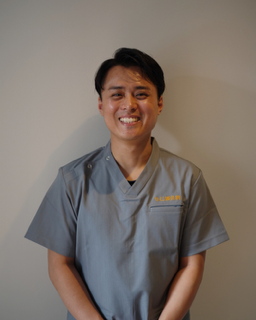

ご自宅・施設で
受けられる
訪問鍼灸マッサージ
国家資格を持つ施術者が
お一人おひとりの状態に合わせて
健やかな毎日をサポートします。
無料体験受付中
まずはお気軽にご相談ください。
お身体の状態やご利用までの流れを
丁寧にご説明いたします。

このようなお悩みは
ありませんか？
体が固い
動かしにくい
後遺症がある
つらい
減らしたい

訪問鍼灸マッサージとは
施術者がご自宅や施設へ訪問し、鍼灸・あん摩マッサージ指圧・関節可動域訓練などを行います。
お身体の状態に合わせて、痛みの緩和・拘縮予防・身体機能の維持向上をサポートします。
（※医師の同意書が必要です）
ご利用料金の目安
医療保険適用の場合、自己負担割合により料金が異なります。
| 負担割合 | 1回あたりの目安 |
|---|---|
| 1割負担 | 約300〜700円 |
| 2割負担 | 約600〜1,400円 |
| 3割負担 | 約900〜2,100円 |
※施術内容や訪問距離により異なります。
※医師の同意書が必要です。
無料体験で
分かること
✓ 保険が使えるか
✓ おおよその自己負担額
✓ お身体の状態
✓ 施術内容
✓ ご利用開始までの流れ
ご家族様へ
「離れて暮らしていて様子が分からない」
「身体が固くなってきて心配」
そんなお悩みに寄り添います。
施術だけでなく、お身体の変化も共有しながらサポートいたします。
もと鍼灸院が
選ばれる理由
✓ 国家資格者が対応
✓ 女性施術者在籍
✓ ご自宅・施設どちらも対応
✓ 医療保険対応
✓ 無料体験あり
✓ ご家族様への報告も対応
✓ ケアマネジャー様との連携を重視
ご利用の流れ
お電話またはLINEからご相談ください。
施術内容や制度についてご説明します。
必要書類についてご案内します。
状態に合わせた施術を開始します。
ご利用対象
✓ 通院が困難な方
✓ 介護を受けている方
✓ 脳梗塞後遺症の方
✓ パーキンソン病の方
✓ 関節拘縮や麻痺がある方
✓ 施設に入居中の方
訪問エリア
靱本町から直径8km圏内
西区・中央区・福島区・北区・浪速区・西成区・港区・大正区・天王寺区（一部）・阿倍野区（一部）・住之江区（一部）・住吉区（一部）・東成区（一部）・城東区（一部）
※訪問可能かどうかはお気軽にご相談ください。
ケアマネジャー様へ
ご利用者様の状態変化や施術経過を、必要に応じてご家族様・ケアマネジャー様へ共有いたします。
報告・連絡・相談を大切にし、安心して連携していただける訪問施術を心がけています。
人とのつながりを大切に
私たちは施術だけではなく、ご利用者様・ご家族様・ケアマネジャー様・医療介護関係者様とのつながりを大切にしています。
「報告・連絡・相談（ホウレンソウ）」を気をつけ、小さな変化も共有できる関係づくりを心がけています。
スタッフ紹介

院内施術と訪問施術を担当しています。
ご利用者様やご家族様との信頼関係を大切にし、安心して施術を受けていただけるよう心がけています。

ご利用者様一人ひとりに寄り添い、その方らしい生活を支えられる施術を目指しています。
ケアマネジャー様やご家族様との連携を大切にし、報告・連絡・相談を気をつけています。
よくある質問
Q. 本当に保険が使えますか？
A. 医師の同意書があれば利用できます。
Q. 施設でも受けられますか？
A. はい、施設への訪問も対応しています。
Q. 鍼は痛いですか？
A. お身体の状態に合わせて施術しますのでご安心ください。
まずはお気軽に
ご相談ください
対象エリアかわからない方も
お気軽にご相談ください。
訪問鍼灸マッサージ
住所
〒550-0004
大阪府大阪市西区靱本町1丁目14-11 RE014